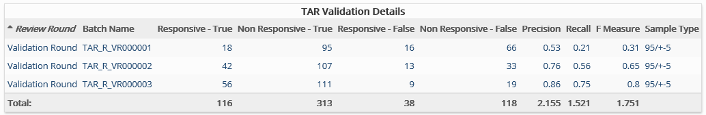

Presents detailed results for each validation round, including precision data for the review in terms of how accurately Responsive documents have been identified by the TAR process.
Complete the following selections:
Report Title: A report title is selected by default; change the title if needed.
TAR Project: Select the TAR project of interest.
